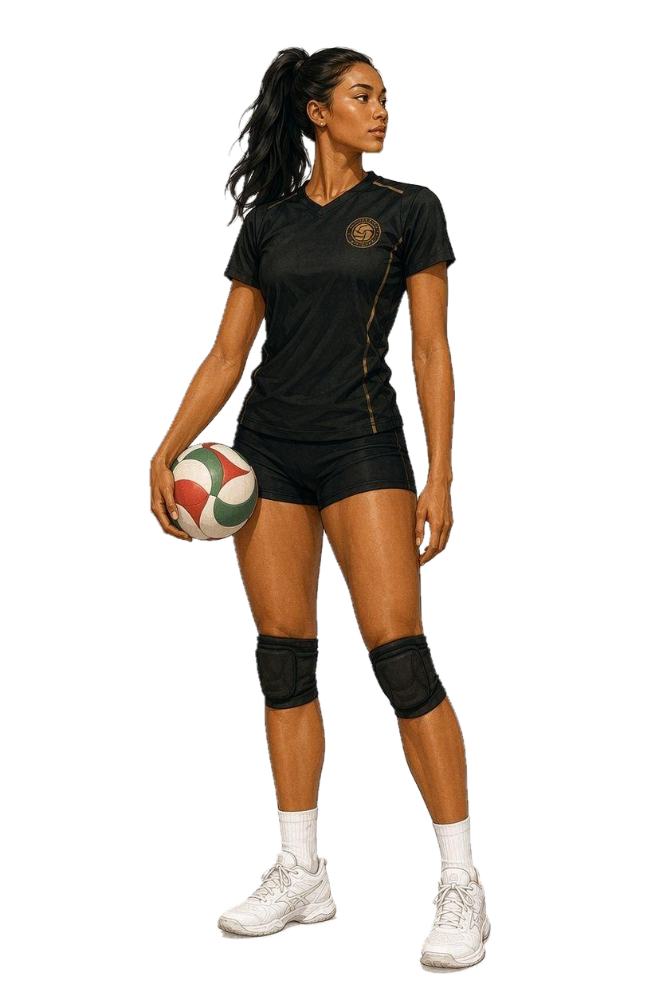

YIJIA / VOL. 01
昨天的失败者们，
今天的我们
又是什么人呢？
今日は敗者であっても、それが君を決定づけるものではない。
明日の君はもう敗者じゃない。では、なにをする？何者になる？
MY VOLLEYBALL ATLAS
跟着球，回到那些时刻
点亮八个光点，把四年慢慢走完。
06:40 → 21:00 / 一天与四年的球场

今日は敗者であっても、それが君を決定づけるものではない。
明日の君はもう敗者じゃない。では、なにをする？何者になる？
点亮八个光点，把四年慢慢走完。